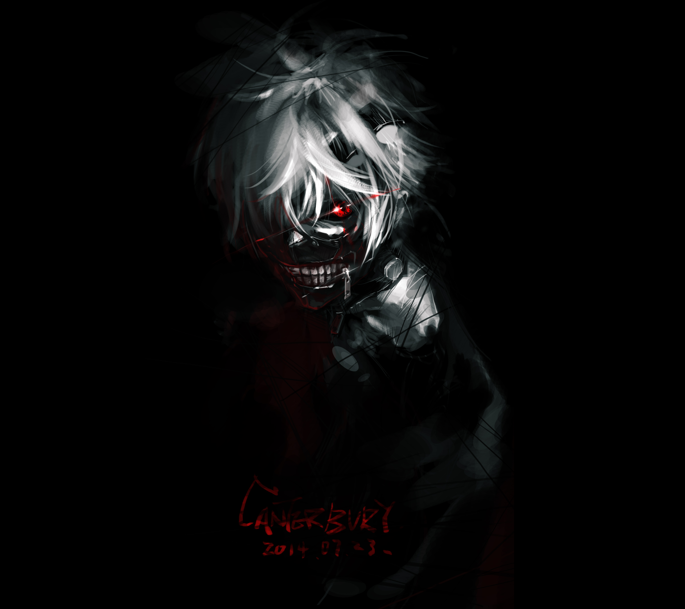
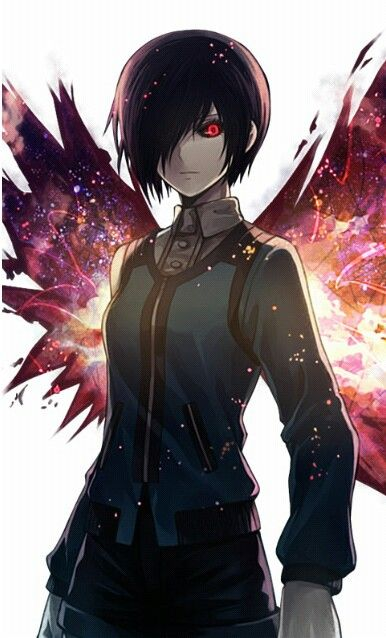

Anteiku é o nome do café ghou que acolheu Ken Keneki quando passou pela transformação ghou após sofrer o acidente com as barras de ferro. O cheiro de café fresco e o ambiente acolhedor proporcionaram a Ken um refúgio em meio ao caos de sua nova vida. La junto a ele, Touka Kirishima se tornou uma figura importante, oferecendo apoio e compreensão em sua jornada. haviam tambem outros ghous, como o chefe Yoshimura, e seu fiel amigo, Yomo. Foi tambem na anteiku, que kaneki conseguiu sua mascara e deu inicio a sua jornada.
Certo dia, como em toda história de ghou, algo inesperado aconteceu. Kaneki foi levado para um leilao ghou e apos isso, sofreu uma serie de torturas e perdeu parte de sua humanidade. A partir desse momento, ele se tornou um ghou mais forte e determinado a proteger aqueles que amava, incluindo Touka, Hiyoshi, Ayato Kirishima e Hinami Fueguchi. A história de Ken Kaneki é uma jornada de autodescoberta, luta e sacrifício em um mundo onde humanos e ghou coexistem em conflito constante.
Ken Kaneki
Ken Kaneki é o protagonista da série Tokyo Ghoul. Ele é um estudante universitário que se torna meio ghou após um acidente envolvendo uma ghou chamada Rize Kamishiro. Após a transformação, Ken luta para equilibrar sua vida humana e ghou, enfrentando desafios e descobrindo mais sobre o mundo dos ghou.
Kaneki é conhecido por sua personalidade introspectiva e sua busca por identidade. Ele passa por uma jornada de autodescoberta, enfrentando dilemas morais e questionando sua própria humanidade. Sua relação com Touka Kirishima, Hiyoshi, Yomo e outros personagens é central para a trama, enquanto ele tenta proteger aqueles que ama em um mundo hostil.

Kirishima Touka
Kirishima Touka, uma das protagonistas e posteriormente, a amada de Kaneki, é a peça fundamental que levou nosso protagonista a desejar tornar-se mais forte. Ela é uma personagem feminina admirada e tao somente, forte, vencendo ate mesmo ao tsukyama sem uma alimentacao considerada adequada para ghous. Portadora de uma kagune unicamente linda, nossa passara vampira rasga os ceus enviando seus dardos contra os inimigos.
Touka possui uma personalidade forte, determinada e, por vezes, impulsiva. Apesar de sua aparência fria e distante, ela é profundamente sensível e se importa com aqueles ao seu redor. Sua atitude defensiva é resultado das dificuldades e perdas que enfrentou como ghou, mas, ao longo da história, ela demonstra empatia, coragem e uma grande capacidade de amar e proteger seus amigos.

Nagashika Hideyoshi
Conhecido também pelo apelido de Hide, é o melhor amigo de Kaneki, sempre demonstrando preocupação e lealdade ao protagonista. Hideyoshi é inteligente, observador e possui uma personalidade extrovertida, sendo uma presença constante e positiva na vida de Kaneki, mesmo após as mudanças que ocorrem em seu amigo. Sua amizade é um dos pilares emocionais da história, mostrando o valor dos laços humanos em meio ao caos.
Hide acompanha Kaneki das sombras, sempre observando e protegendo seu amigo sem que ele perceba. Mesmo após Kaneki se tornar um ghou, Hide continua a apoiá-lo discretamente, reunindo informações e se envolvendo em situações perigosas para garantir a segurança de Kaneki. Sua lealdade e amizade são demonstradas por suas ações silenciosas, mostrando que, mesmo à distância, ele nunca abandona Kaneki.